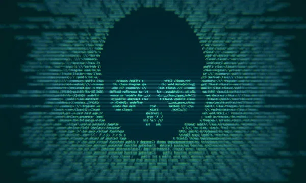
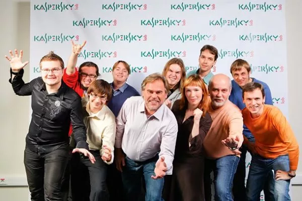
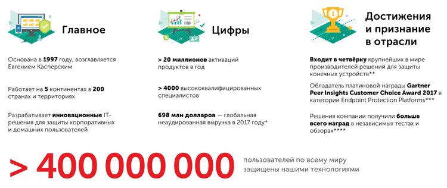
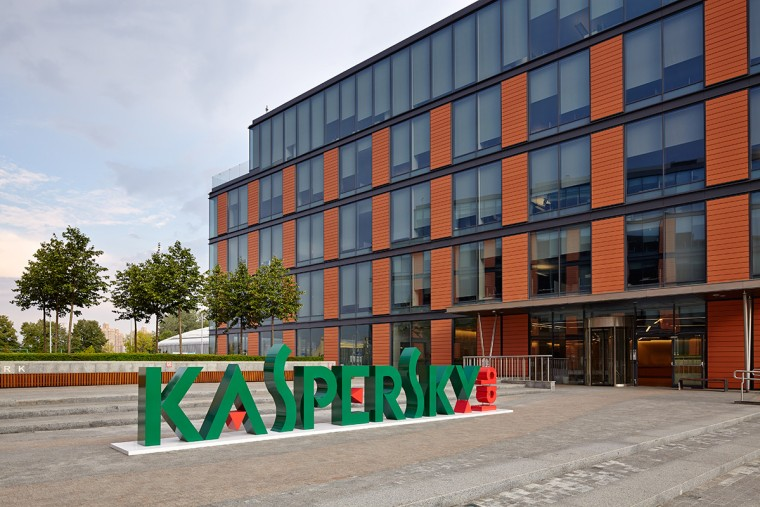
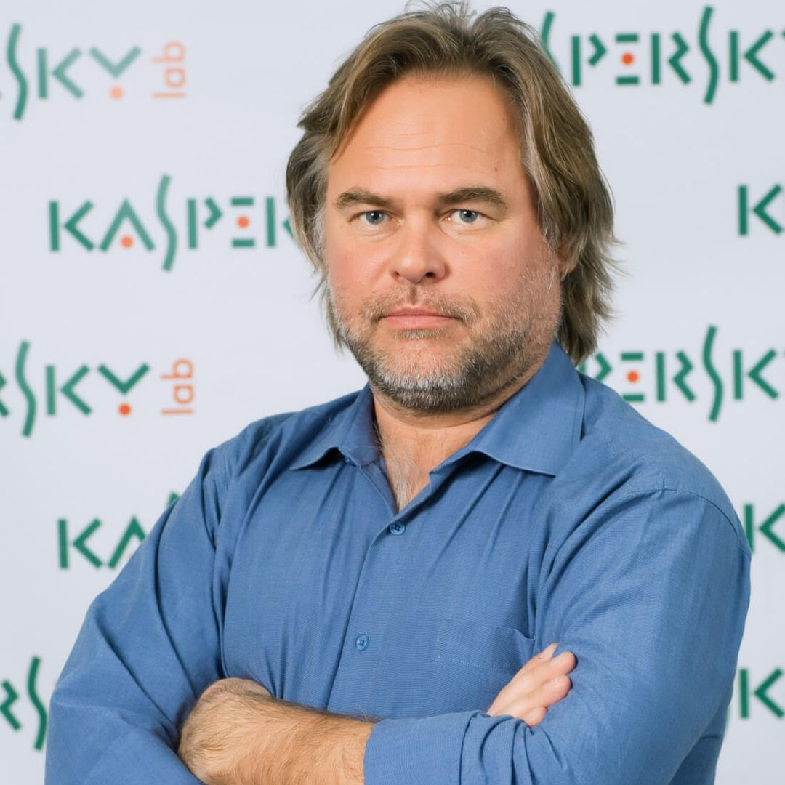

О Евгении Касперском
-
About cybersecurity
Evgeny began studying cybersecurity by accident after discovering the Cascade virus on his computer in 1989. His specialized education in cryptography helped him analyze the virus, understand its behavior, and create his first computer antidote. After this, Evgeny became even more interested in the phenomenon of malware and the development of anti-malware tools. An exotic collection of antivirus modules, created personally by Evgeny, This later formed the basis of Kaspersky Lab's antivirus database. Today, it is one of the largest antivirus databases in the world, preventing infections from over 500 million malicious programs.
 -
About antivirus
In 1990, Eugene Kaspersky and a team of like-minded individuals began developing the antivirus program AVP Toolkit Pro. Four years later, a laboratory at the University of Hamburg recognized it as the most effective antivirus solution of its time. In 1997, Evgeny and his colleagues decided to establish an independent company – Kaspersky Lab. Since the company's founding, Evgeny has led antivirus research, and in 2007, he was appointed its CEO.
 -
About the number of employees
Today, Kaspersky Lab operates in nearly 200 countries and regions worldwide, making it one of the most dynamically developing companies in the field of information security. The company employs over 4,000 professionals across 30+ regional offices in over 30 countries, and its cybersecurity solutions protect millions of users worldwide.
 -
О лаборатории
В «Лаборатории Касперского» трудятся эксперты мирового уровня, которые принимали участие в расследованиях некоторых самых сложных и изощренных кибератак: Stuxnet, Flame, Red October и других. Компания активно сотрудничает с Интерполом, Европолом и государственными правоохранительными структурами, помогая им в борьбе с киберпреступностью. Евгений Касперский – обладатель ряда международных наград за свои технологические, научные и предпринимательские достижения. Он также имеет степень почетного доктора наук Плимутского университета. Евгений – большой любитель активного туризма и дикой природы. О своих путешествиях – от полярных экспедиций до трекинга в джунглях – он пишет в личном блоге, иллюстрируя свои рассказы собственными фотографиями.
 -
Карьера
Карьера В 1987 году Евгений Касперский поступил на работу в многопрофильный научно-исследовательский институт при Министерстве обороны СССР. Именно здесь он начал изучать компьютерные вирусы — после того, как в 1989 году столкнулся с вирусом Cascade. Проанализировав код вируса, Евгений разработал специальную утилиту для его лечения и заинтересовался данной тематикой. В 1991 году Евгений Касперский начал работать в Центре информационных технологий КАМИ, где возглавил небольшую группу специалистов, занимавшуюся разработкой антивирусных решений. В ноябре 1992 года группа выпустила свой первый полноценный продукт — AVP 1.0. В 1994 году он одержал победу в сравнительном тестировании, проведённом тестовой лабораторией Гамбургского университета. Это обеспечило продукту международную известность, и разработчики начали лицензировать свои технологии зарубежным IT-компаниям. В 1997 году Касперский и его коллеги приняли решение создать собственную компанию, выступив в качестве соучредителей «Лаборатории Касперского». Евгений не хотел, чтобы в названии компании фигурировала его фамилия, но его переубедила жена Наталья Касперская, также вошедшая в число соучредителей компании. В ноябре 2000 года продукт AVP был переименован в Антивирус Касперского. Касперский руководил антивирусными исследованиями в компании со дня её основания по 2007 год, когда он занял пост генерального директора «Лаборатории Касперского». Офис Касперского находится в новом бизнес-центре на Ленинградском шоссе Рабочий кабинет Евгения Касперского находится на одном этаже с ведущими разработчиками и аналитиками компании, рядом с Глобальным центром исследований «Лаборатории Касперского» (GReAT). Евгений является соавтором нескольких патентов в сфере информационной безопасности, в том числе патента на ограничительно-атрибутную систему безопасности, контролирующую взаимодействие компонентов ПО. Этот патент выдан на технологию, лежащую в основе разрабатываемой в настоящее время «Лабораторией Касперского» безопасной операционной системы. Касперский — один из ведущих мировых специалистов в области защиты от вирусов. Он является автором большого числа статей и обзоров по проблеме компьютерной вирусологии, регулярно выступает на специализированных семинарах и конференциях в России и за рубежом. Касперский — член Организации исследователей компьютерных вирусов (CARO), которая объединяет экспертов в этой области. Касперский является основателем конференции Virus Bulletin, которая с 2001 года ежегодно проводится в антивирусной индустрии. В 2012 году Касперский вошёл в рейтинг 100 самых влиятельных мыслителей года по версии журнала Foreign Policy и занял 40 место. В декабре 2012 года американский журнал Wired поместил Касперского на 8-е место в списке «самых опасных людей в мире» — за разоблачение американского кибероружия, созданного для шпионажа на Ближнем Востоке и срыва иранской ядерной программы. Евгений ощущает себя человеком, который находится на передовой линии фронта в войне с киберпреступниками. «Лаборатория», по утверждениям Касперского, инвесторов не имеет, действует исключительно за счёт собственных ресурсов, всю прибыль вкладывает в дальнейшее развитие. В марте 2015 года агентство Bloomberg опубликовало материал, из которого следует, что с 2012 года связи компании Касперского с российскими спецслужбами резко усилились, а на ключевые менеджерские посты в Лаборатории пришли «люди, имеющие тесные связи с российскими военными или разведывательными структурами». По мнению Касперского, агентству не удалось ничего «накопать»: статья Bloomberg на треть состоит из «чисто достоверных, публичных фактов», содержащихся в отчётах и других открытых документах компании. В 2013 году выручка компании составила 667 миллионов долларов, а в 2023 году выросла до 721 миллиона долларов. По состоянию на 2015 год в «Лаборатории Касперского» работало более 2 800 человек. С 2010-х годов компания входила в четвёрку ведущих мировых производителей программных решений для защиты конечных устройств (Endpoint Protection). В 2012 году она объявила о планах по разработке безопасной операционной системы для защиты систем критической инфраструктуры от онлайн-атак. В 2019 году компания начала предлагать специализированные решения для IoT и промышленной кибербезопасности. К 2023 году компания запустила SD-WAN и Kaspersky Container Security, что привело к 44-процентному росту в сегменте решений, не связанных с конечными точками. Также в апреле 2023 года «Лаборатория Касперского» перевела свои продукты для домашних пользователей на подписную модель распространения, назвав просто Kaspersky. Компания столкнулась с геополитическими проблемами, в частности в 2017 году, когда правительство США запретило её программное обеспечение из-за предполагаемых связей с российским правительством, что Касперский отрицал. В июне 2023 года компания сообщила о кибератаке, направленной на айфоны её руководящего состава. В июне 2024 года, после очередных санкций США, компания ушла с американского рынка, позже заменив своё программное обеспечение на системах американских пользователей на UltraAV. Несмотря на эти проблемы, «Лаборатория Касперского» сохраняет присутствие в Европе, Азии, на Ближнем Востоке и в Латинской Америке. 12 декабря 2022 года вошёл в состав экспертного совета при правительстве РФ.
